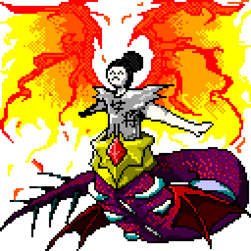

技術部門は３つの班に分かれています。
班の名前をクリックすれば、各班の講習会資料を閲覧できます。

ハード班
ハード班は電子工作を中心に、ロボットを作ります。現状はAruduinoによる制御が一般的になっています。
Let's Make With Us.
ここはKSWL技術部門のページです。放送部門のサイトは以下のボタンから行くことができます。
技術部門は３つの班に分かれています。
班の名前をクリックすれば、各班の講習会資料を閲覧できます。
ハード班は電子工作を中心に、ロボットを作ります。現状はAruduinoによる制御が一般的になっています。